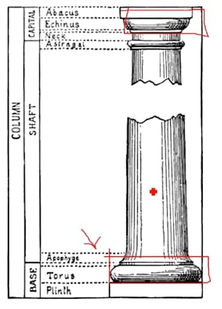
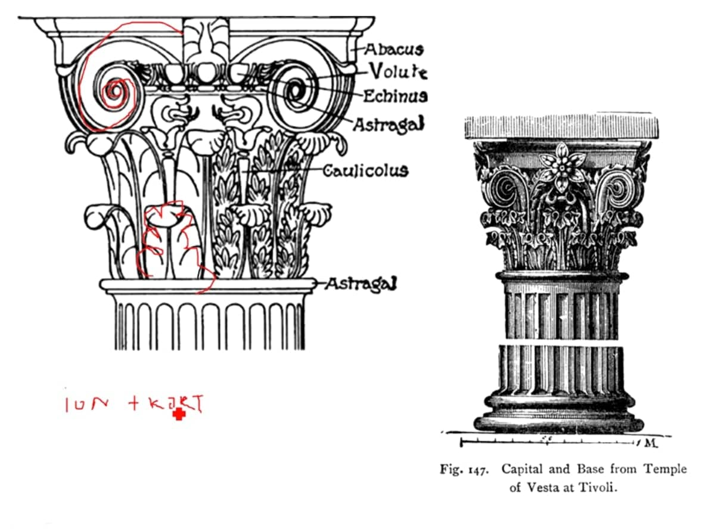

5. Římské antické umění
-
význam má hlavně moře → hlavně
přímořská města, netvořili říši ale spolupracující
městské státy
Chronologie
-
UMĚNÍ POZDNÍ REPUBLIKY 1 STOL-30 PŘ.N.L (TÉŽ ŘECKO-ŘÍMSKÉ
UMĚNÍ)
- UMĚNÍ ZA PRINCIPÁTU
- UMĚNÍ ANTIKY (3-6 STOL)
- 313 EDIKT MILÁNSKÝ
- 476 ZÁNIK ZÁPADOŘÍMSKÉ ŘÍŠE
ARCHITEKTURA
- princip chrámu od řeků - příbytek boha
- nově používán beton
- výborní na inženýrské stavby
- Akvadukt - most na vodu (“vodovodič”)
- Viadukt - cesta
-
první baziliky, ovšem použití jako
trhy nebo soudní síně
Sochařství
- objevení portrétů
- kult předků
-
když někdo umřel, odlili posmrtnou masku → první busty
- veškeré vrásky, detaily
- po vzniku císařství sloužil pro kult císařů
- použití kontrapostu
- vztyčená pravice → motiv hovoření k lidu
- vítězné OBLOUKY → POZEMNÍ bitvy
- vítězné SLOUPY → NÁMOŘNÍ bitvy
- TOSKÁNSKÝ SLOUP
- HLAVICE JAKO DÓRSKÝ
- MÁ PATKU (OPROTI DÓRSKÉMU)
- NEMÁ KANELURY (HLADKÝ)

- KOMPOZITNÍ ŘÁD
- IONSKÝ + KORINSKÝ (VOLUTY + AKANT)

Malířství
- zbytky z Pompejí po výbuchu sopky
- náznaky perspektivy, oproti Řekům není problém s akty
OBRÁZKY
-
jde mluvit o principu baziliky, ovšem bacha na současné
využití → zatím není sakrální